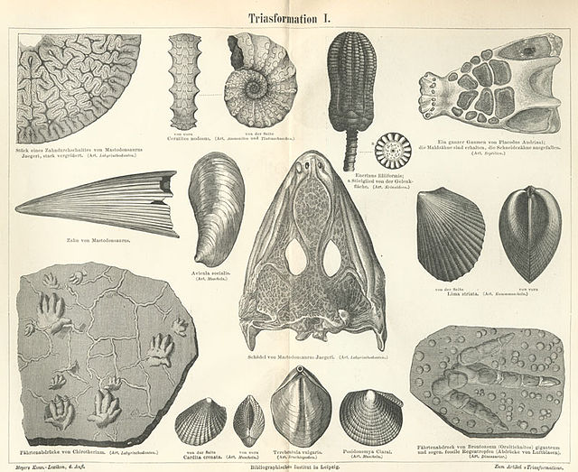

TRIÁSICO
El Triásico corresponde a la primera parte de la era Mesozoica. Es el período de la historia de la Tierra que se sitúa antes de la
época de los grandes dinosaurios del Jurásico. Abarca un intervalo de tiempo de unos 50 millones de años: desde hace 251 millones de
años hasta hace 201 y está comprendido entre dos de las mayores extinciones o crisis de la vida sobre el planeta: alrededor de un 50%
de los organismos que habitaban la Tierra se extinguieron al inicio del Triásico (hace 251 millones de años), y casi un 30% desaparecieron
al final del Triásico (hace 201 millones de años).
En aquel tiempo el océano Atlántico no existía y el mar del Tethys iba expandiéndose hacia occidente cubriendo con sus aguas todo el
centro y el sur de Europa. En la Tierra sólo había un único y gran continente, denominado Pangea, donde se podría distinguir una zona
continental septentrional llamada Laurasia, y una zona meridional llamada Gondwana.
La gran mayoría de los dinosaurios aparecieron a finales del Período Triásico, momento en el que Pangea se dividiría en dos debido a
una serie de terremotos y erupciones volcánicas. Entre ellos destacan los terópodos y los prosaurópodos. Con el paso del tiempo, los
dinosaurios comenzaron a colonizar la tierra, debido a la ausencia de competencia y con nichos ecológicos vacíos. Entre los dinosaurios
más comunes del Triásico están el Lystrosaurus, el Cynognathus, el Ornithosuchus, el Herrerasaurus y el Plateosaurus.
PANGEA
 Durante el Triásico, casi todas las tierras de la Tierra se concentraban en un solo
supercontinente centrado más o menos en el ecuador, llamado Pangea («toda la tierra»).
Este continente tenía forma de «C» y al este, en el hueco de la «C» se encontraba el océano
Tetis y rodeándolo todo se situaba el océano Panthalassa (el «océano universal»). Todos los
sedimentos del océano profundo depositados durante el Triásico han desaparecido a través de la
subducción de las placas oceánicas, por lo que se sabe muy poco del océano abierto durante el
Triásico.
Durante el Triásico, casi todas las tierras de la Tierra se concentraban en un solo
supercontinente centrado más o menos en el ecuador, llamado Pangea («toda la tierra»).
Este continente tenía forma de «C» y al este, en el hueco de la «C» se encontraba el océano
Tetis y rodeándolo todo se situaba el océano Panthalassa (el «océano universal»). Todos los
sedimentos del océano profundo depositados durante el Triásico han desaparecido a través de la
subducción de las placas oceánicas, por lo que se sabe muy poco del océano abierto durante el
Triásico.
HALLAZGOS

El registro fósil del período Triásico es muy escaso a nivel mundial y está formado principalmente
por una fauna de invertebrados marinos de reducido tamaño, microfósiles de vertebrados, restos
aislados de vertebrados, restos indirectos de vertebrados e invertebrados marinos y también de flora.
Como consecuencia de esta limitación en el número de ejemplares, el Triásico constituye uno de los
periodos geológicos más complicados de estudiar, además de por el reducido número de especialistas que
trabajan en el mismo. Las investigaciones sobre el Triásico realizadas en esta universidad han generado
importantes colecciones científicas con fósiles provenientes principalmente de la Comunidad Valenciana y
Cuenca. Las colecciones son: “Colección Triásico”, “Colección Conodontos Triásicos” y de más reciente
creación la “Colección de icnitas de quelonio”, consideradas como las más antiguas de Europa. Estas colecciones
han sido posible gracias a los estudios realizados por una investigadora especialista en bivalvos del triásico
desde el año 1976, a un profesor titular que estudió los foraminíferos y a diferentes tesis realizadas sobre
bivalvos y conodontos, estos últimos, importantes fósiles guía.
PULSE PARA VOLVER